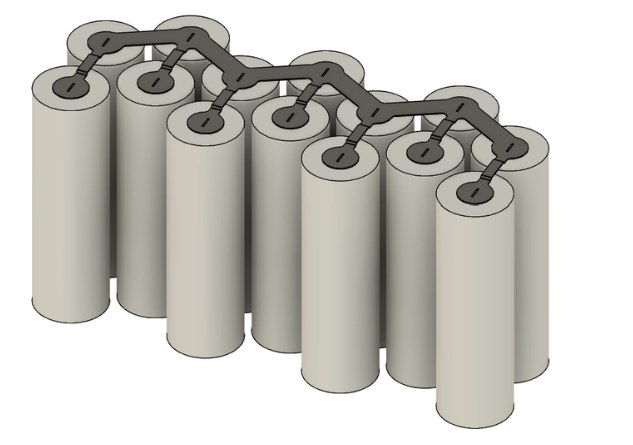
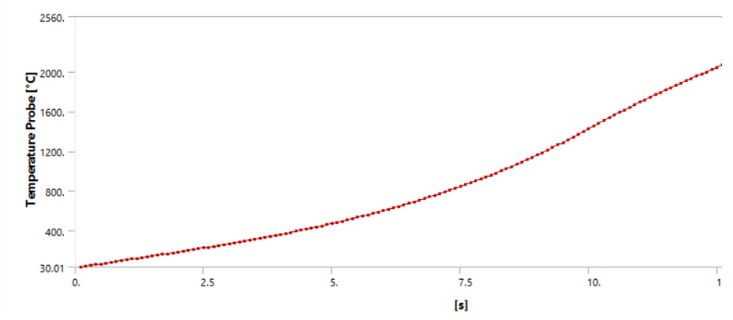

Fusible Link Simulation
An Ansys model to find which nickel strip geometry fuses reliably at a target fault current, so the strips connecting cells in a cylindrical-cell pack can double as fusible links.
- Role
- Full design and implementation (individual project)
- Tools
- Ansys Mechanical, Ansys Workbench
- Analysis
- Coupled electro-thermal transient
- Status
- Simulation complete

The problem
Fuses in a battery pack isolate faulty cells and stop dangerous current surges. In cylindrical-cell packs, the spot-welded nickel strips that connect cells often act as fusible links too. Their geometry has to be tuned so they fuse at the target fault current without failing during normal operation.
Approach
I used a coupled transient analysis in Ansys Mechanical, pairing an electric analysis for Joule heat generation with a thermal analysis for temperature rise. Nickel's resistivity is defined as a temperature-dependent curve. At each time step the solver computes Joule heating from the strip's current resistance, updates the temperature, then reads the new resistance off the curve before the next step.
That two-way coupling matters. Nickel's resistivity climbs with temperature, so as the strip heats it generates more heat per amp, which accelerates the run toward the fusing point. Iterating over the full simulation period captures the strip's complete temperature-versus-time response, including that feedback near failure.


Results
At a 50 A fault current, the neck of the link reaches 1560 °C by 10.5 s, past nickel's melting point of about 1455 °C. The temperature curve steepens as it climbs, which is the resistivity feedback described above.
Next steps
The current model treats the strip in isolation, which makes it a conservative baseline. Planned extensions:
- Model conduction into the connected cells, which act as heat sinks and would raise the true fusing current.
- Simulate dynamic current profiles instead of a fixed current, to reflect real fault and load conditions.
- Model more complex strip geometries beyond the simplified shapes used here.